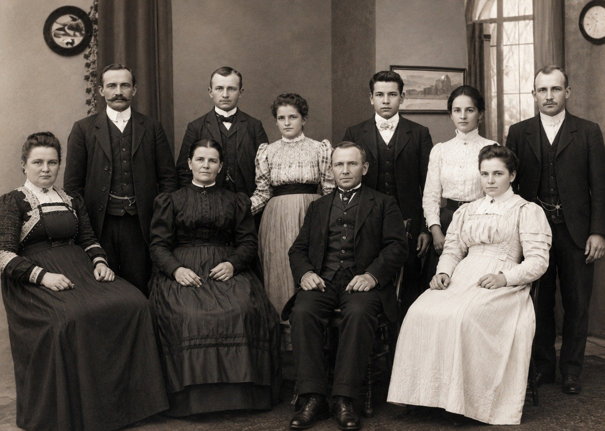
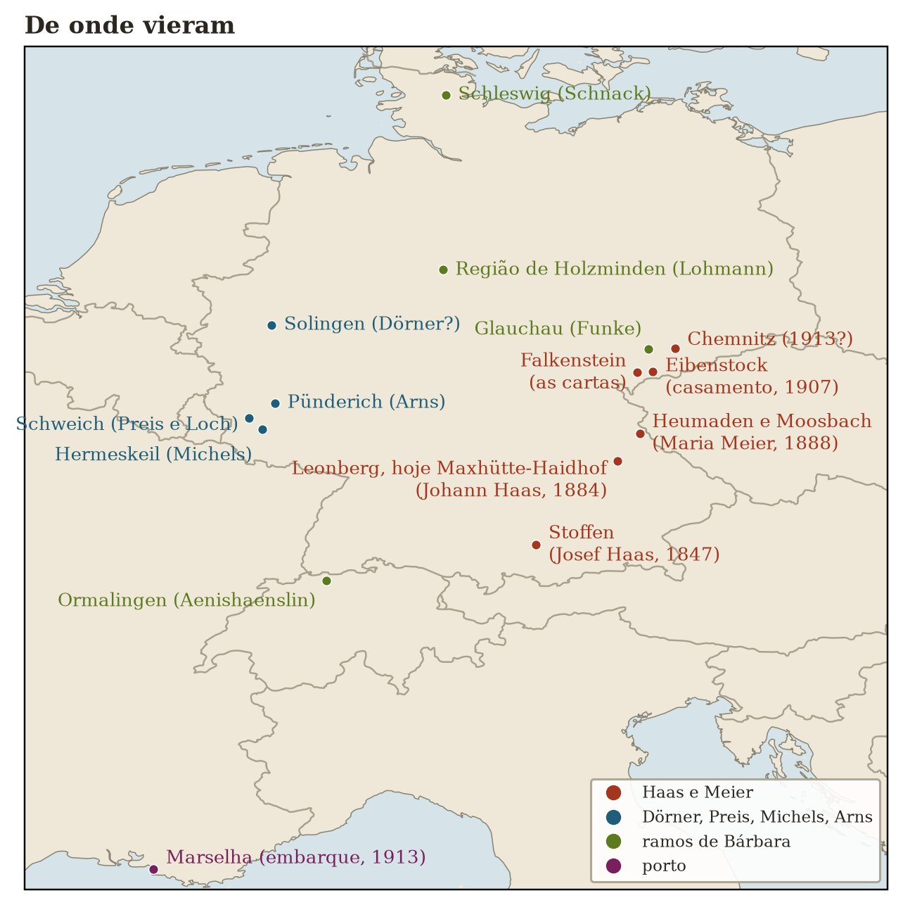
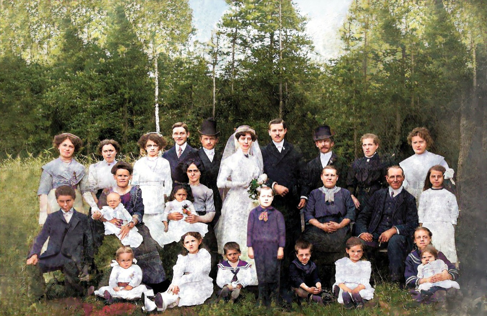

Teil II · Der Dampfer Formosa und der Urwald
Kapitel 4 — Vor der Abreise: Von den Rädern in Heumaden zum Rauch von Leonberg
Vorhergesagte Verlagerung: Marseille, Rio de Janeiro, Laguna. Seegang von der Seite, lange Quarantäne. Im Bergland dichter Wald und Versprechen, die sich nicht erfüllen.
49,2° N · 12,1° O, Maxhütte-Haidhof · 49,6° N · 12,4° O, Heumaden, Bayern
Jede Kaltfront hat einen Ursprung, den niemand sieht: ein Stück Luft, das eines Tages zu lange an derselben Stelle stillstand.
Laut der Notiz von Vetter Agenor haben Johann und Maria, zwei Katholiken aus Bayern, am 3. August 1907 in Eibenstock geheiratet. Wenn es das Eibenstock ist, das ich von den Landkarten kenne, dann liegt es in Sachsen, und Sachsen war überwiegend lutherisch. Was hatten die beiden dort zu suchen? Um bei dieser Frage anzukommen, muss ich dort anfangen, wo jeder von ihnen herkam.
Zwei Uhr nachts in Heumaden
Heumaden, Oberpfalz, 7. April 1888
Ich stelle mir vor, dass die Hebamme zu Fuß kam. Im April sind die Feldwege in der Oberpfalz noch feucht vom Tauwetter, und ein Fuhrwerk hätte mehr Lärm gemacht, als der Anlass verlangte. Sie hieß Glas (mehr sagt das Pfarrbuch nicht über sie: ein Nachname und eine Aufgabe, Hebamme), und wahrscheinlich kannte sie jedes Haus im Dorf von der Küchentür her. Heumaden war nicht groß: eine Handvoll Häuser aus Stein und Holz, ein paar Scheunen, wellige Felder, die zu den dunklen Wäldern an der böhmischen Grenze hin abfallen. Die Kirche stand in Moosbach, die Pfarrei St. Peter und Paul, und dorthin brachte man die Neugeborenen, die Brautpaare und die Toten.
Um zwei Uhr in der Frühe jenes 7. April wurde im Haus des Ökonomen Georg Adam Meier ein Mädchen geboren. Die Mutter, Franziska Voit, war sechsundzwanzig Jahre alt, der Vater neunundzwanzig. Sie waren seit etwas mehr als drei Jahren verheiratet (die Trauung war am 23. November 1884 in derselben Kirche von Moosbach gewesen) und hatten im Juni 1886 schon ein Mädchen namens Maria Katharina taufen lassen. Die Neugeborene von 1888 bekam nur den Namen Maria. Die Familie hat sie immer Maria Katharina genannt, und das Taufbuch deutet an, woher die Verwechslung kam: Der Name gehörte der älteren Schwester. Ob jenes erste Mädchen klein gestorben ist, wie so viele, hat uns das Sterbebuch von Moosbach noch nicht verraten. Getauft wurde sie am selben Tag, wie es im katholischen Bayern üblich war; Patin war, so das Pfarrbuch, Katharina Reichenberger, Bäuerin aus Burgtreswitz, dem Dorf der Mutter. Sie war die Patin aller Mädchen des Paares.
Ich schreibe diese Zeilen mit einer Freiheit, von der ihr, Matheus und Lucas, wissen müsst. Ich weiß nicht, ob es in jener Nacht regnete. Ich weiß nicht, ob die Hebamme zu Fuß kam, ob eine Lampe brannte, ob der Vater in der Küche oder im Stall wartete. Was ich weiß, stammt aus einem handgeschriebenen Buch in alter deutscher Schrift, das ich erst später richtig aufschlagen werde, wenn ich von der Winterreise 2018 erzähle. Für den Moment genügt es zu sagen, dass die Tatsachen dort stehen: der Tag, die Stunde, der Name der Hebamme, der Beruf des Vaters. Der Rest ist das, was ein Meteorologe tut, wenn er eine einzige Beobachtungsstation hat und die ganze Karte zeichnen muss: Er interpoliert, vorsichtig, im Wissen, dass er sich irren kann.
Eines kann ich mit einiger Sicherheit behaupten, denn das ist Klimatologie und nicht Genealogie: Die Nächte Anfang April sind in diesem Teil Bayerns kalt. Die Oberpfalz liegt im Herzen des Kontinents, fern vom Atlantik, der die Winter im Rheinland mildert. Wenn sich ein Hoch über Mitteleuropa festsetzt und trockene Luft von Osten über die böhmischen Berge herabsinkt, stürzt die Temperatur in der Nacht ab. Die Bauern hatten einen Namen für diesen Wind von der Grenze: Böhmischer Wind. Er war kalt und beharrlich, trocknete die Haut aus und ließ die Pfützen gefrieren. Ich stelle mir gern vor, dass das Erste, was die Mota auf dieser Welt einatmete, ein wenig von dieser kontinentalen Luft war, derselben Luft, von der sie gut siebzig Jahre später ihren Enkeln, in einem Deutsch, das diese kaum verstanden, sagen sollte, sie habe sie nie wieder gespürt.
Marias Vater, Georg Adam, war der Sohn von Michael Meier, der in Heumaden das Handwerk des Wagners ausübte. Für dieses Wort gibt es im Portugiesischen keine genaue Entsprechung: Der Wagner baut Wagen, und vor allem ihre Räder. Es war ein Handwerk der Genauigkeit: das Holz auswählen, es biegen, die Speichen in die Nabe setzen, den erhitzten Eisenreifen aufziehen, der sich beim Abkühlen zusammenzieht und das ganze Rad umschließt wie eine Umarmung. Georg Adam lernte das Handwerk vom Vater und erscheint bei seiner Heirat auch als Ökonom, wie man in den bayerischen Registern einen Landwirt nannte. Die Mutter, Franziska, stammte aus dem Nachbardorf Burgtreswitz, Tochter des Bauern Johann Voit und der Barbara Woppmann.
Nach Maria verzeichnet das Taufbuch von Moosbach noch zwei Kinder des Paares: Theresia im Juni 1890 und Michael im April 1892, geboren an Marias viertem Geburtstag. Bei den vier Taufen wechselt der Beruf des Vaters: Wagner 1886, Ökonom 1888, Krämer 1890, Häusler 1892. Da steigt eine Familie die Leiter hinab, an einem Ort, an dem sich das Land nicht vermehrte. Merkt euch diesen Satz, denn er ist der Schlüssel zu diesem ganzen Kapitel.
Und nach 1892 verstummt das Buch. Keine weitere Taufe, Hochzeit oder Beerdigung aus diesem Haus taucht in Moosbach auf, während die Onkel und Vettern, die in Heumaden blieben, bis 1935 weiter Seiten füllen. Wohin gingen Georg Adam, Franziska und die Kinder? Die Antwort lag, wie ihr in Kapitel 7 sehen werdet, in einer Schublade der Familie, aufgeschrieben von einer der Schwestern der Mota.
Die gemeinschaftlich gepflegten Stammbäume im Internet geben Maria weitere Geschwister (Johann Baptist, Barbara, Margaretha, Josef, Georg, Anna), aber keines davon steht mit diesen Eltern im Taufbuch von Moosbach. Entweder wurden sie anderswo geboren, nach 1892, oder sie gehören zu einer anderen Familie Meier. Die Frage bleibt offen.

Der Ziegelknecht, der nicht zu uns gehörte
Stoffen, Oberbayern, 1847, und Leonberg, Oberpfalz, 1878
In den ersten Fassungen dieses Buches begann die andere Seite der Geschichte in einem Dorf namens Stoffen bei Landsberg am Lech in Oberbayern, fast dreihundert Kilometer südwestlich von Heumaden. Die Stammbäume im Internet sagten, Josef Haas, der Vater des Fata, sei dort am 19. Mai 1847 geboren, Sohn des Ziegelknechts Georg Haas und der Maria Anna Albrecht. Ich fand die Taufe, las das Wort Ziegelknecht, es gefiel mir, und ich schrieb seitenweise über den Lehm von Stoffen, den Gips von Sandberg und das Senklot von Ituporanga, als wären es drei Generationen desselben Handwerks.
Es war ein Namensvetter. Joseph Haas ist ein häufiger Name im katholischen Bayern, und die Taufe von Stoffen ist echt, aber sie gehört zu einem anderen Joseph. Aufgeklärt hat den Irrtum das Trauungsbuch von Leonberg. Am 4. März 1878 (die standesamtliche Trauung war am 1. März gewesen) trug der Pfarrer die Heirat von Haas Joseph ein, ledig, Fabrikarbeiter in Leonberg, mit Franziska Dengler, Tochter eines Bergmanns. In der Spalte für die Eltern des Bräutigams steht klar und deutlich Mich. Haas und Kunigunde Stadelmann. Nicht Georg und Maria Anna. Der Großvater des Fata hieß Michael.
Archivkarte: Pfarrei Leonberg (Bistum Regensburg), Trauungsbuch 1874–1919 (Matricula: Leonberg_Bul012), S. 8, Jahrgang 1878, Eintrag Nr. 4 vom 4. März. Bräutigam: Joseph Haas, ledig, Fabrikarbeiter in Leonberg; Eltern: Mich. Haas und Kunigunde Stadelmann. Braut: Franziska Dengler aus Plattenhof, Tochter der Margaretha Dengler, später verheiratete Rockinger. Die Namen der Eltern des Bräutigams hat Antigravity gelesen, und ich habe die Lesung am Bild überprüft. Den Herkunftsort der Eltern, den Antigravity als Etzgersrieth liest, habe ich noch nicht überprüft.
Und jetzt kommt der Teil, bei dem ich den Stift weglegen musste. Nach der Lesung von Antigravity, die ich noch mit eigenen Augen überprüfen muss, stammten Michael Haas und Kunigunde Stadelmann aus Etzgersrieth, einem Dorf der Pfarrei Moosbach, etwa vier Kilometer von Heumaden entfernt. Sollte sich das bestätigen, verliert der Satz, den ich weiter unten in diesem Kapitel geschrieben habe, zwischen den Familien des Fata und der Mota hätten fünfzig Kilometer gelegen, seinen Sinn. Die Großväter der beiden wären in dieselbe Kirche St. Peter und Paul gegangen, hätten ihre Kinder am selben Taufbecken taufen lassen und ihre Toten auf demselben Friedhof begraben. Johann und Maria könnten, bevor sie ein Brautpaar wurden, Kinder von Nachbarn gewesen sein.
Ich bewahre diese Geschichte vom Ziegelknecht aus Stoffen hier auf, statt sie zu löschen, weil sie etwas lehrt, das für eure ganze Forschung gilt: Ein gleicher Name und ein plausibles Datum ergeben noch keinen Menschen. Man muss die Eltern prüfen, den Ehepartner, den Ort. Ich habe das nicht getan und jahrelang einen Mann meinen Ururgroßvater genannt, der nie zu uns gehörte.
Die Frage, die mir der Ziegelknecht gestellt hat, bleibt aber bestehen, denn sie gilt auch für die echten Haas: Warum haben so viele aus unserer Familie, auf beiden Seiten des Ozeans, mit ihren Händen an Dingen gearbeitet, die ihnen nicht gehörten?
Die ehrlichste Antwort, die ich gefunden habe, führt über das Erbe. Im alten Bayern (in Oberbayern, in der Oberpfalz von Heumaden) wurde das Bauernland nicht unter den Kindern aufgeteilt. Nach Brauch und oft auch nach Gesetz galt das Anerbenrecht. Der Hof ging ungeteilt an einen Sohn, meist an den ältesten oder an den jüngsten, je nach Gegend. Die anderen bekamen bestenfalls eine Abfindung in Geld, eine Aussteuer, das Recht, im Haus zu wohnen, solange sie ledig waren. Dahinter stand das Überleben des Hofes: Ein Hof, der in jeder Generation zerstückelt wird, ernährt irgendwann niemanden mehr. Im Rheinland und an der Mosel, woher die Vorfahren meiner Mutter kamen, galt das Gegenteil (die Realteilung, die das Land in immer schmalere Streifen zerschnitt), und diese andere Geschichte erzähle ich in den Kapiteln von Teil III. Beide Systeme hatten am Ende dieselbe Wirkung: Sie drängten Menschen vom Land.
In Bayern hatte der Bruder, der nicht erbte, wenige Wege. Er konnte als Knecht auf dem Hof des Bruders bleiben. Er konnte ein Handwerk lernen, und das waren zu einem guten Teil die Handwerke von Lehm, Stein, Holz und Eisen. Er konnte in die Stadt gehen, in die Fabriken, die um die Mitte des Jahrhunderts entstanden. Oder er konnte auswandern. Ich weiß nicht, ob Michael Haas ein Sohn war, der nicht erbte. Ich weiß, dass sein Sohn Joseph nicht auf dem Land blieb: Er ging in die Fabrik.
Ich will hier nicht alles zur Theorie machen. Auf das Erbe komme ich in Kapitel 15 zurück, wo es mehr Raum verdient. Ich bitte euch nur, das Muster zu bemerken, weil es sich wiederholt: das Eisen von Sandberg, der Gips des Fata, das Senklot von Ituporanga. Generationen von Haas-Männern haben ihre Familien ernährt, indem sie Dinge bauten, in denen andere wohnen würden.
Der Rauch der Maximilianshütte
Sandberg bei Leonberg, Oberpfalz, Juli 1884
Irgendwann in seiner Jugend (ich weiß nicht, wann, und nicht, warum) landete Josef Haas in Sandberg bei Leonberg, nicht weit von Regensburg. Dort gab es seit der Mitte des Jahrhunderts ein Eisenwerk, die Maximilianshütte, benannt nach König Maximilian II. von Bayern. Das Werk gab später der Gemeinde selbst den Namen: Maxhütte-Haidhof, zu der heute Leonberg und Sandberg gehören. Es ist der seltene Fall einer Stadt, die so heißt wie ihre Fabrik.
Ich stelle mir gern vor, was er dort vorfand: die Hochöfen, die das Eisenerz mit Kohle und eingeblasener Luft schmelzen, in einem Feuer, das nie ausgeht. Ein Hüttenwerk des 19. Jahrhunderts hatte seinen Geruch, seinen Lärm und seinen Rauch; an Tagen mit Inversionswetterlage muss der Himmel tief und grau gehangen haben, der Rauch der Schlote gefangen unter einem Deckel aus kalter Luft. Ich kenne dieses Phänomen gut: Es ist dasselbe, das an Wintermorgen im Itajaí-Tal den Nebel unten in den Tälern festhält, bis die Sonne warm genug ist, um ihn aufzulösen.
In den Dokumenten erscheint Josef als Fabrikarbeiter. Er heiratete Franziska Dengler. Und am 11. Juli 1884, um fünf Uhr nachmittags, kam in Sandberg der Sohn zur Welt, den sie Johann nannten: mein Urgroßvater, der Mann, den die brasilianischen Enkel den Fata nennen würden. Zwei Tage später, am 13. Juli, ging Josef zum Standesamt Leonberg, um die Geburt anzuzeigen. Der Eintrag bekam die Nummer 47 jenes Jahres.
Hier gibt es eine kleine Abweichung, die ich festhalten muss, denn dieses ganze Buch besteht aus ehrlich vermerkten Abweichungen. Vetter Agenor schrieb in der Tabelle, die das Rückgrat unserer Genealogie bildet, Johann sei am „08. Juli 1884“ geboren. Das Standesamtsregister sagt 11. Juli. Ich halte mich an das Register, angelegt zwei Tage nach der Geburt nach den Angaben des Vaters selbst. Agenor arbeitete mit dem, was er hatte (Familienerinnerung, brasilianische Dokumente, die die Angaben früherer Dokumente wiederholten), und drei Tage Unterschied nach einem Jahrhundert und einem Ozean sind fast ein Lob seiner Genauigkeit.
Johann war kein Einzelkind. Agenors Tabelle gibt ihm die Geschwister Josef, Alois, Georg, Maria, Franziska und Therese. Antigravity hat die Taufbücher von Leonberg Seite für Seite gelesen und eine andere Liste von Kindern des Joseph Haas und der Franziska Dengler gefunden: Barbara (1879), Joseph (1880), Kunigunda (1882), Johann (1884), Franz Xaver (1888, mit zwölf Tagen gestorben), Georg (1889) und Sebastian (1891). Die beiden Listen stimmen nur bei Josef und Georg überein. Ich habe diese Seiten noch nicht überprüft und lasse deshalb beide Listen hier nebeneinander stehen. Eine kinderreiche Arbeiterfamilie in einem Fabrikort. Keines dieser Geschwister taucht in Brasilien auf.
In dieser Lesung steckt eine Einzelheit, die, falls sie sich bestätigt, eine andere Frage löst. Nach dem Taufbuch von Leonberg wäre Johann am 8. Juli 1884 geboren und nicht am 11. Von dort käme dann Agenors Datum.

Dieses Atelierfoto ist mit der allgemeinen Beschriftung „Familie des Fata in Deutschland“ auf uns gekommen. Es zeigt elf Menschen: ein älteres Paar sitzt in der Mitte, umgeben von jungen Frauen in hellen Kleidern und jungen Männern mit Weste und Schnurrbart. Es ist verlockend zu sagen, das sitzende Paar seien Josef und Franziska und einer der stehenden jungen Männer sei Johann. Ich selbst glaubte, beim Mann mit Schnurrbart links eine gewisse Geometrie des Gesichts wiederzuerkennen. Aber ich weiß es nicht. Soweit ich weiß, stehen auf der Rückseite keine Namen. Ich lasse die Frage lieber offen, wie eine Station ohne Daten, als die Karte mit einer Vermutung zu füllen, die später jemand als Gewissheit zitiert.
Was die Familie über Johann bewahrt hat, betrifft sein Handwerk. Der Text zum hundertjährigen Jubiläum, den meine Schwester Marise Haas Lourenço 2013 schrieb, sagt, er „stammte aus einer Maurerfamilie und hatte sich auf die Arbeit mit Gips spezialisiert, er fasste Fenster, Portale und Altäre ein“. Ein Stuckateur also: der Handwerker, der kommt, nachdem der Maurer die Wand hochgezogen hat, um ihr Form und Schmuck zu geben. Die Gesimse der bayerischen Barockkirchen, die Medaillons an den Decken, die Fensterumrahmungen der Bürgerhäuser: All das war Arbeit von Stuckateuren. Es war ein Handwerk für feine Hände und viel Geduld: den Gips in der richtigen Konsistenz anrühren, die Profilschablone an der Wand entlangziehen, Blätter, Engel und Voluten von Hand modellieren.
Johann kam aus einer Fabrikstadt, Sohn eines Arbeiters. Dass er bis zum Zierstuck gelangte, ist für mich ein kleiner sozialer Aufstieg: vom Arm, der den Ofen füttert, zur Hand, die zeichnet. Marise hat noch eine Einzelheit festgehalten, die mich bewegt: Man rief ihn oft als Dolmetscher, weil er mehrere deutsche Dialekte beherrschte, „die in einem Land, dessen Sprache noch nicht vereinheitlicht war, noch sehr lebendig waren“. Das Deutschland von 1900 war ein junges Land, politisch erst seit drei Jahrzehnten geeint, und ein Bayer aus der Oberpfalz konnte echte Mühe haben, einen Sachsen, einen Schwaben oder einen Norddeutschen zu verstehen. Ich stelle mir Johann auf den Baustellen vor, zwischen Arbeitertrupps von überallher, wie er die Anweisungen des Poliers in den Dialekt eines jeden übersetzt. Ein Mann mit gutem Gehör, der den Tonfall wechselte, wie man ein Werkzeug wechselt.
Vielleicht war er deshalb später der Geschichtenerzähler, an den sich die Enkel erinnern. Wer sein Leben lang übersetzt, lernt, dass jeder Satz mindestens zwei Fassungen hat.

Eibenstock, August 1907
Ich weiß nicht, wie Johann und Maria sich kennengelernt haben.
Das ist der Satz, der mir in diesem Kapitel am schwersten fällt. Er aus einem Hüttenort bei Regensburg, sie aus einem Bauerndorf an der böhmischen Grenze. Zwischen Sandberg und Heumaden liegen etwa fünfzig Kilometer Luftlinie, weit genug, dass sich zwei junge Leute aus diesen Familien kaum zufällig auf einem Kirchenfest begegnet wären. Und doch sind sie sich begegnet. Wenn Johanns Großeltern tatsächlich aus Etzgersrieth kamen, wie ich oben erzählt habe, schrumpft die Entfernung auf vier Kilometer, und den Zufall braucht es nicht mehr.
Vetter Agenor notierte, dass sie am 3. August 1907 in Eibenstock geheiratet haben. Wenn es das Eibenstock ist, das ich von den Landkarten kenne, liegt es nicht in Bayern, sondern in Sachsen, im Erzgebirge, nahe der böhmischen Grenze: eine Gegend des Bergbaus, der Stickerei und der Talsperren, etwa hundert Kilometer von Heumaden und deutlich weiter von Sandberg entfernt. Den Eintrag dieser Hochzeit habe ich noch nicht gesehen; ich weiß nicht, in welcher Kirche sie stattfand und wer die Trauzeugen waren. Sachsen war überwiegend lutherisch, und die beiden waren katholisch. All das macht Eibenstock zu einer der offenen Fragen dieses Buches.
Ich habe eine Hypothese, und ich stelle sie als Hypothese vor. Johanns Arbeit war ihrer Natur nach Wanderarbeit: Der Stuckateur geht dorthin, wo gebaut wird. Und auch Marias Arbeit führte sie laut Marise aus dem Haus: „Maria verdiente, neben der Hausarbeit, Lohn mit dem Melken von Kühen.“ Ein neunzehnjähriges Mädchen, Tochter eines kleinen Bauern mit sieben Kindern, das gegen Lohn Kühe molk, also auf fremden Höfen. Das ist das Bild einer Tochter, die nicht erben würde. Wieder das Anerbenrecht: Das Land der Meiers in Heumaden würde an einen einzigen der Brüder gehen, und die anderen mussten ihr Auskommen suchen, wo es Arbeit gab. Es ist durchaus möglich, dass die beiden sich fern von zu Hause begegnet sind, beide im Dienst anderer, an einem Ort, der keinem von ihnen gehörte. Aber mehr ist es nicht: eine Möglichkeit.
Zwei Spuren geben dieser Möglichkeit eine Adresse. Die erste ist eine Familienerinnerung: Als sie 1913 nach Brasilien aufbrachen, wohnten Johann und Maria in Chemnitz, der großen Industriestadt Sachsens, der Stadt der Textil- und Maschinenfabriken, die in jenen Jahren schnell wuchs und Maurer brauchte. Die zweite liegt in einer Schublade der Familie: Briefe aus Deutschland mit der Absenderadresse Dorfstadt, einem Ortsteil von Falkenstein im Vogtland. Eibenstock liegt zwischen beiden, am Rand des Erzgebirges, ein paar Dutzend Kilometer von Falkenstein und etwas weiter von Chemnitz entfernt. Wenn die Erinnerung stimmt, ist die Hochzeit von 1907 kein geographisches Rätsel mehr: Es war keine Reise nach Sachsen, sondern eine Hochzeit in der Gegend, in der die beiden schon lebten und arbeiteten. Und ein wahrscheinliches Warum tauchte 2026 auf, in den Briefen, von denen ich in Kapitel 7 erzähle: Marias Familie verließ Heumaden und landete im Vogtland, bei Falkenstein, wo 1971 noch drei Schwestern und ein Bruder von ihr lebten. Wenn sie 1907 schon dort waren, hat Maria in der Nähe ihrer Mutter geheiratet. Und noch immer fehlt das Papier. Es steht im Trauungsbuch von Eibenstock und, falls die Kinder dort geboren wurden, in den Registern von Chemnitz.
Was Marise sagt und was die Familie immer wiederholt hat: Sie heirateten jung, „mit dem Traum, der uns allen so eigen ist, eine Familie zu gründen“. Johann war dreiundzwanzig, Maria neunzehn. Marise fügt einen Satz hinzu, den ich treffend finde: Sie war es, „die sich mit der Arbeit auf dem Land auskannte, und gewiss der Halt für die große Reise, die sie bald antreten sollten“.

Dieses andere Foto hat mich immer beschäftigt. Es ist eine Hochzeit, im Freien aufgenommen, auf einer Lichtung zwischen Tannen und Birken: die Braut mit Schleier und Strauß, der Bräutigam mit schmalem Schnurrbart, zwei Männer mit Zylinder, ein Dutzend Kinder im Sonntagsstaat, die im Gras sitzen, ältere Frauen in Schwarz und junge Frauen in Weiß. Es kam zu mir als „Hochzeit in der Familie der Mota“, und jahrelang habe ich mich gefragt, ob es die Hochzeit von Johann und Maria ist. Sie ist es nicht. Die Familie hat die Mota erkannt: Sie sitzt links, im dunklen Kleid, mit einem Baby auf dem Schoß. Sie war also schon Mutter, und das Foto ist nach 1908 entstanden. Das Baby kann Hildegard, Frida, Luisa oder Walter sein; die Blätter an den Birken sagen, dass es Sommer war.
Wessen Hochzeit war es? Ich habe die Gesichter dieses Fotos neben die des Abschiedsfotos von 1913 und die der Familie der Mota im Wäldchen gestellt.
![In der ersten Reihe das Abschiedsfoto von 1913: die Frau links, der Mann mit Schnurrbart, die Mota und der Fata. In der zweiten das Hochzeitsfoto: die ältere Frau und der ältere Mann, die rechts sitzen, die Mota mit dem Baby, die Braut, der Bräutigam, der Mann mit Zylinder und Schnurrbart rechts vom Bräutigam und die junge Frau, die neben der Mota sitzt. In der dritten das Familienfoto im Wäldchen: die ältere Frau und der ältere Mann, der Mann mit Schnurrbart links, der junge Mann rechts und drei junge Frauen, die hinten stehen.](imagens/rostos_tres_fotos_meier.jpg)
Ich sehe drei Übereinstimmungen, und mehr als Übereinstimmungen sind es nicht. Das ältere Paar, das auf der Hochzeit rechts sitzt, hat dieselben Gesichter wie das sitzende Paar im Wäldchen: die Frau mit dem runden Gesicht und dem Spitzenkragen, der Mann mit der hohen Stirn und den großen Ohren. Wenn es dasselbe Paar ist, ist es die Familie Meier, und die beiden wären Georg Adam und Franziska, die Eltern der Mota. Dann ist es die Hochzeit eines ihrer Kinder. Der Bräutigam wiederum erinnert stark an den Mann mit Schnurrbart, der auf dem Foto im Wäldchen links sitzt. Und die dunkelhaarige Braut passt gut zu der Frau links auf dem Abschiedsfoto von 1913.
Wenn sich das alles bestätigt, schließt sich die Geschichte auf eine Weise, die ich nicht zu erfinden wagte: Dies ist die Hochzeit einer Schwester der Mota, vielleicht mit Walter Heckel, und dieses Paar stand im März 1913 mit seinem kleinen Kind neben Johann und Maria, für das Foto, das bei ihnen bleiben sollte. Und diese Schwester schrieb achtundfünfzig Jahre später aus Rempesgrün, sie habe den Abschied am Bahnhof nie vergessen. Das sind viele „Wenn“. Die Namen von Braut und Bräutigam müssen im Heiratsregister eines Standesamts im Vogtland stehen, um 1908 bis 1912, und den Schlüssel zu dieser Tür haben die Verwandten dort.
Wo wurde das Foto aufgenommen? Ich entscheide mich für das Vogtland, wahrscheinlich für Rempesgrün oder die Umgebung. Den Ausschlag gibt die Familie: Die Meiers verschwinden nach 1892 aus den Moosbacher Büchern, und 1971 lebten die Schwestern der Mota noch dort, zwischen Rempesgrün und Dorfstadt. Eine Hochzeit ihrer Kinder um 1910 fand wohl dort statt. Die Landschaft bestätigt, was die Familie nahelegt. Das Vogtland liegt höher und ist kälter als die Gegend um Heumaden, ein Land der Fichten und Birken, und genau dieser dunkle, dichte Wald steht im Hintergrund aller drei Fotos: der Hochzeit, der Familie im Wäldchen und des Abschieds von 1913. Ich halte diese Entscheidung als meine fest, damit ihr wisst, dass sie eine Deutung ist und kein Dokument. Wenn eines Tages der Heiratseintrag auftaucht oder der Stempel eines Fotografen auf der Rückseite einer Kopie, dann gilt der.
Die ersten Ehejahre, schrieb Marise, „erwiesen sich als schwer und leidvoll“. Hier kommen wir zu dem Teil des Kapitels, den ich am liebsten überspringen würde.
Johann und Maria bekamen in Deutschland zwei Töchter, die klein starben: Hildegard (Agenor schreibt Hildegart) und Frida. Wir kennen weder die Geburtsdaten noch die Sterbedaten noch die Ursache. „Aus Gründen, die wir nicht kennen“, sagt der Jubiläumstext, mit einer Nüchternheit, die ich respektiere. Wir wissen nicht, wo sie begraben sind. Vielleicht in Eibenstock, vielleicht an einem anderen Ort, an den die Arbeit das Paar geführt hatte.
1907 war die Säuglingssterblichkeit in Deutschland noch hoch; in vielen ländlichen Gegenden und Arbeitervierteln erlebte eines von fünf Kindern seinen ersten Geburtstag nicht. Das zu sagen, mindert nichts. Ich habe selbst zwei Söhne und kann „Hildegard und Frida“ nicht lesen, ohne kurz innezuhalten. Es sind die ersten beiden Namen einer Liste, die dieses Buch bis zum Ende tragen wird, der Liste der Kinder, die es nicht geschafft haben: fünf der zwölf Kinder des Fata und der Mota. Die anderen drei Namen nenne ich noch nicht. Ihr, Matheus und Lucas, seid da, weil die anderen sieben durchgehalten haben.
Luisa, Walter und die Entscheidung
Deutschland, 1910 bis 1913
1910 wurde Luisa geboren, 1912 Walter. Zwei lebende Kinder nach zwei Verlusten. Ich weiß nicht, wo sie geboren wurden; die Register, nach denen ich suche, sind noch nicht aufgetaucht. Ich weiß, dass sie im März 1913 lebten und gesund genug waren, um mit dem Zug quer durch Europa zu fahren und in Marseille an Bord eines Schiffes zu gehen, und das weiß ich aus einem Dokument, das ich im nächsten Kapitel zeige und in dem die beiden mit zwei Jahren und einem Jahr verzeichnet sind.
Ende 1912 wurde Maria wieder schwanger. Jedenfalls ergibt sich das aus Marises Text, denn Vetter Agenor hat die Dinge anders festgehalten.
In seiner Tabelle steht eine Tochter namens Gertrudes, geboren in Deutschland am 22. Oktober 1911, die mit einem Jahr auf dem Schiff mitgekommen wäre. Marises Text sagt etwas anderes: dass Gertrudes im Mai 1913 in Brasilien geboren wurde und Maria mit ihr schwanger an Bord ging. Beide Fassungen können nicht zugleich stimmen, und im nächsten Kapitel stelle ich sie nebeneinander, zusammen mit dem Dokument, das schwerer wiegt. Vorerst folge ich Marise: Im März 1913 hatten Johann und Maria zwei kleine Kinder und ein drittes unterwegs.
Was bringt ein solches Paar dazu fortzugehen?
Marise spricht von der „großen wirtschaftlichen und politischen Krise“ in Deutschland und von dem „drohenden Krieg“, der „das Paar verfolgte“. Mir gefällt, dass sie nicht vereinfacht hat. Das Deutschland von 1912 war zugleich eine Industriemacht in voller Expansion und ein Land enormer Ungleichheit, in dem die Lebenshaltungskosten schneller stiegen als die Löhne der Arbeiter und Landarbeiter. Und die Luft war geladen. Die Balkankrisen, das Flottenwettrüsten mit England, die von Jahr zu Jahr wachsenden Militärhaushalte: All das erreichte die Dörfer über die Zeitungen und die Gespräche im Wirtshaus. Niemand wusste genau, was geschehen würde, aber viele ahnten, dass etwas geschehen würde. In der Meteorologie nennen wir das Labilität: Die Atmosphäre sammelt Energie, die Luftsäule ist bereit aufzusteigen, und es fehlt nur noch ein Auslöser.
Für einen jungen Familienvater bedeutete Krieg etwas sehr Konkretes: die Einberufung. Johann war achtundzwanzig. Es ist möglich (und hier spekuliere ich wieder), dass die Angst, eingezogen zu werden und Maria mit den Kindern allein zu lassen, ebenso schwer wog wie das fehlende Geld.
Auf der anderen Seite des Ozeans lag Brasilien. Seit dem Ende des 19. Jahrhunderts warben die brasilianische Regierung und die Regierungen der Südstaaten in Europa um Siedler: billiges Land, in Raten zahlbar, Werkzeug, Saatgut, Hilfe in den ersten Monaten. In Santa Catarina hatte die Bundesregierung kurz zuvor im Landesinneren, an den Hängen des Gebirges, eine Siedlungskolonie gegründet und sie Anitápolis genannt, zu Ehren von Anita Garibaldi, der Heldin von Laguna. Dorthin sollten die Haas gehen, auch wenn das an dem Tag, an dem sie den Aufbruch beschlossen, noch nicht feststand. Marise schreibt, sie gingen „ins Paradies“, in Anführungszeichen, die von ihr stammen und die ganze Ironie dessen tragen, der weiß, was danach kam.
Ich vermute, dass das Land selbst das entscheidende Argument war. Ein Maurer, Sohn eines Arbeiters, und eine Melkerin, Tochter eines kleinen Bauern mit sieben Kindern: Keiner der beiden würde in Bayern je ein Stück Boden erben. Nicht, wenn sie hundert Jahre alt würden. Das Anerbenrecht hatte diese Tür verschlossen, noch bevor sie geboren waren. In Brasilien, so stand es in den Prospekten, warteten Siedlerparzellen, die lotes coloniais, auf jeden, der arbeiten wollte.
Marise besteht auf einem Punkt, den ich wichtig finde und nicht weglassen will: Die Entscheidung „war weder willkürlich noch einseitig“. Beide kamen aus gefestigten Familien, in denen „das Gewicht der Meinung der Eltern ebenso groß war wie der Respekt, den die Kinder ihnen entgegenbrachten“. Es gab Gespräche, Stimmen dafür und dagegen. Ich stelle mir den Küchentisch in Heumaden vor, an einem Winterabend, Georg Adam und Franziska, die hören, wie die Tochter sagt, sie gehe mit dem Mann und den Enkeln fort, in ein Land, von dem sie kaum den Namen der Hauptstadt kannten. Ich stelle mir die Stille danach vor.
Und wenn ihr nicht zurückkommt?
Ich weiß nicht, ob jemand diesen Satz gesagt hat. Aber jemand muss ihn gedacht haben, denn das Foto, das sie vor der Abreise machen ließen, sieht aus wie ein endgültiger Abschied. Marise schrieb, sie hätten sich verabschiedet „mit Gesten, aus denen die Gewissheit sprach, dass sie sich nie wiedersehen würden“. Sie hatte recht: Sie haben sich nie wiedergesehen.
Ich möchte dieses Kapitel mit einer Übung beenden, die ich bei der Arbeit oft mache. Wenn ich ein Unwetter analysiere, suche ich den Moment, in dem es unausweichlich wurde: den Augenblick, in dem die warme, feuchte Luft auf die Kaltfront traf und aufzusteigen begann, und von dem an keine kleine Kraft es mehr auflösen konnte. In der Genealogie der Haas steht dieser Augenblick in keinem Dokument. Er geschah in zwei Menschen, an einem Datum, das niemand notiert hat, im Winter 1912 auf 1913. Davor waren die Haas Bayern mit einer bayerischen Zukunft, wahrscheinlich arm, wahrscheinlich gezeichnet vom kommenden Krieg. Danach waren es wir.
Anfang März 1913 stellten sich Johann, Maria, Luisa und Walter vor einem Fotografen auf, neben Verwandten, die bleiben würden. Am 7. bekam das Foto eine Inschrift: Zum Andenken! vor unserer Abreise nach Brasilien. Danach kamen, so stelle ich es mir vor, die Koffer, die Bücher, die sie laut Marise mitnahmen, die Winterkleider, die drüben zu nichts nütze sein würden, und ein Bahnhof.
Der Zug fuhr nach Süden. Nach Frankreich, ans Meer.
Für euch zum Entdecken
- Wessen Hochzeit ist das Foto auf der Lichtung, auf dem die Mota mit einem Baby auf dem Schoß sitzt? Sind Braut und Bräutigam die Schwester der Mota und Walter Heckel? Der Heiratseintrag, um 1908 bis 1912, müsste in einem Standesamt im Vogtland liegen.
- Warum haben zwei Katholiken aus Bayern in Eibenstock geheiratet? Das dortige Trauungsbuch müsste sagen, in welcher Kirche es war und wer die Trauzeugen waren.
- Stammten Michael Haas und Kunigunde Stadelmann, die Großeltern des Fata, wirklich aus Etzgersrieth, dem Nachbarort von Heumaden? Sucht die Taufe von Joseph Haas im Taufbuch von Moosbach, um 1850.
- Welche der beiden Geschwisterlisten des Fata stimmt, die von Agenor oder die aus den Leonberger Büchern?
- Wer hat die Briefe aus Dorfstadt in Falkenstein unterschrieben, die in einer Schublade der Familie liegen?
- Wo sind Hildegard und Frida begraben, und woran sind sie gestorben? Wenn beide in Chemnitz geboren wurden, fangt mit den dortigen Registern an.
- Wer sind die elf Menschen auf dem Atelierfoto der Familie des Fata? Zeigt das Foto den älteren Vettern und Cousinen: Kann jemand einen Namen nennen?